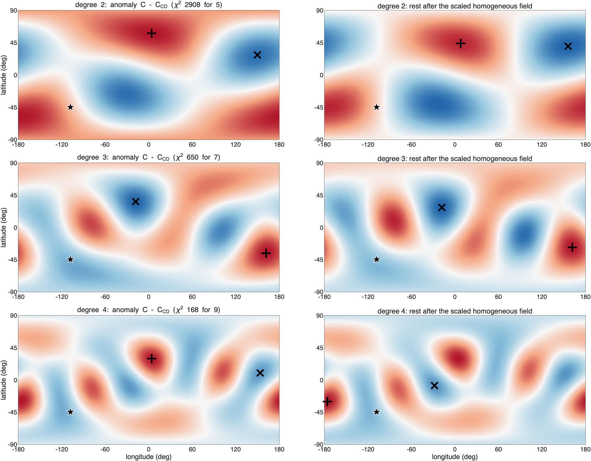
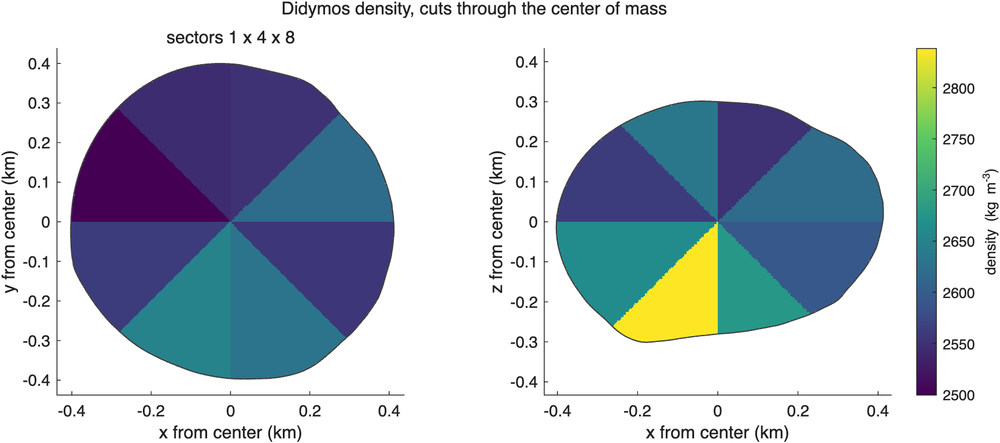
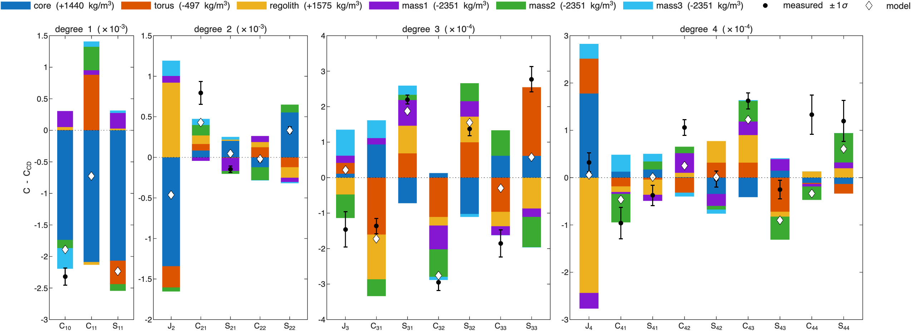
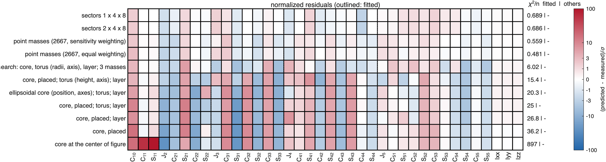
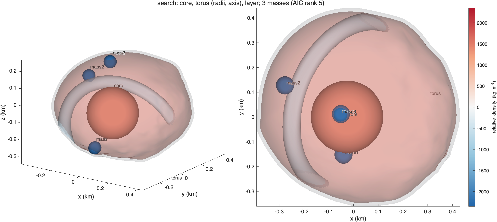

ROB-DATA2: Didymos#
Last edited October 27, 2026
In short. The extra mass is to one side and below: the center of mass is 2.3 m from the center of figure toward the south-west (latitude −45°, longitude −108°), degree 2 moves mass along an axis tilted 58° from the equator, and degree 3, small in the other Didymos packages, is large. Nothing symmetric about the spin axis makes this: every model of a core, a torus and layers stays far from the measurements (reduced χ² 13 and more). The sector grids and the point masses fit, and agree with each other: denser below the equator toward −x and −y, lighter above it toward +y. The best solution is the 32-sector grid (reduced χ² 1.65 with 22 effective parameters); it reproduces ROB's exact values to degree 5.
| Kind | Best solution of the kind | Parameters | Reduced χ² | p | AIC | Mean squared residual, degrees 1–4 |
|---|---|---|---|---|---|---|
| sectors | 1 × 4 × 8 | 22.1 | 1.65 | 0.05 | 70.4 | 0.71 |
| point masses | 2,667, sensitivity weighting | 25.8 | 1.75 | 0.05 | 72.9 | 0.73 |
| search | core, torus, layer and 3 masses | 21.0 | 13.5 | 5 × 10⁻³⁹ | 270.7 | 7.6 |
| components | core, torus (height, axis), layer | 9.0 | 20.2 | 4 × 10⁻¹⁰⁵ | 604.7 | 21.5 |
1. What the measurements say#

C - C_CD 1-sigma sigma what it says
C10 -2.319e-03 1.378e-04 -16.8 center of mass toward -z (south)
C11 -7.246e-04 1.240e-05 -58.4 center of mass toward -x
S11 -2.233e-03 1.304e-05 -171.2 center of mass toward -y
C20 4.616e-04 8.743e-06 52.8 J2 lower: mass toward the poles or the center, away from the equator
C21 7.944e-04 1.417e-04 5.6 mass toward +x in the north and -x in the south
S21 -1.483e-04 3.978e-05 -3.7 mass toward -y in the north and +y in the south
S22 3.380e-04 3.934e-05 8.6 mass toward longitudes 45 and 225 deg
C31 -1.365e-04 2.181e-05 -6.3 order 1: its pattern peaks at longitude 122 deg (and every 360 deg) where Pbar_31 is positive, at the opposite longitudes where it is negative
S31 2.200e-04 1.251e-05 17.6 order 1: its pattern peaks at longitude 122 deg (and every 360 deg) where Pbar_31 is positive, at the opposite longitudes where it is negative
C32 -2.949e-04 2.346e-05 -12.6 order 2: its pattern peaks at longitude 78 deg (and every 180 deg) where Pbar_32 is positive, at the opposite longitudes where it is negative
S32 1.370e-04 1.904e-05 7.2 order 2: its pattern peaks at longitude 78 deg (and every 180 deg) where Pbar_32 is positive, at the opposite longitudes where it is negative
C33 -1.852e-04 3.830e-05 -4.8 order 3: its pattern peaks at longitude 41 deg (and every 120 deg) where Pbar_33 is positive, at the opposite longitudes where it is negative
S33 2.770e-04 3.577e-05 7.7 order 3: its pattern peaks at longitude 41 deg (and every 120 deg) where Pbar_33 is positive, at the opposite longitudes where it is negative
C42 1.060e-04 1.686e-05 6.3 order 2: its pattern peaks at longitude -1 deg (and every 180 deg) where Pbar_42 is positive, at the opposite longitudes where it is negative
C43 1.622e-04 1.669e-05 9.7 order 3: its pattern peaks at longitude -3 deg (and every 120 deg) where Pbar_43 is positive, at the opposite longitudes where it is negative
C44 1.331e-04 4.147e-05 3.2 order 4: its pattern peaks at longitude 10 deg (and every 90 deg) where Pbar_44 is positive, at the opposite longitudes where it is negative- The center of mass is 2.3 m off, four times as far as in DATA1 and DATA3: toward −y (171σ), −x (58σ) and south (17σ).
- J2 is 53σ lower: mass moved toward the poles or the center.
- , , (6σ, 4σ, 9σ) and every order of degree 3 (5 to 18σ): structure that is neither symmetric about the spin axis nor about the equator.
2. Where the mass is#

Center of mass 2.34 m from the center of figure toward lat -45, lon -108 (34 sigma): the anomalous mass is on that side (or a deficit on the other).
Degree 2 (chi-square 2908 for 5): second moment of the anomaly triaxial, values 0.51, -0.03, -0.49 of their spread.
axis toward (largest): lat +58 lon 4 and lat -58 lon -176, +-3 deg
axis middle: lat +16 lon -112 and lat -16 lon 68, +-5 deg
axis away from (smallest): lat +27 lon 149 and lat -27 lon -31, +-4 deg
mass moved toward the axis through lat +58 lon 4 and lat -58 lon -176 and away from the axis through lat +27 lon 149 and lat -27 lon -31.
Rest of degree 2 (without the scaled homogeneous field): triaxial, values 0.49, 0.03, -0.51.
mass moved toward the axis through lat +45 lon 7 and lat -45 lon -173 and away from the axis through lat +41 lon 156 and lat -41 lon -24.
Each degree on the sphere (strongest excess / strongest deficit; rest after the scaled homogeneous field):
degree 2 chi2 2908 for 5: excess lat +58 lon +4, deficit lat +28 lon +150; rest: excess lat +44 lon +8, deficit lat +40 lon +156
degree 3 chi2 650 for 7: excess lat -36 lon +162, deficit lat +36 lon -18; rest: excess lat -28 lon +162, deficit lat +28 lon -18
degree 4 chi2 168 for 9: excess lat +30 lon +4, deficit lat +10 lon +154; rest: excess lat -30 lon -176, deficit lat -8 lon -28- Degree 2 moves mass toward an axis through latitude −58°, longitude −176° (and its opposite end, +58°, 4°) and away from an axis through −27°, −31°: the anomaly is a tilted elongation, not aligned with the spin axis.
- Degree 1: the center of mass toward −45°, −108°: the southern end of that axis carries the excess.
- Degree 3: its strongest excess at −36°, 162° and its strongest deficit at the opposite point (+36°, −18°).
All three point to more mass in the southern hemisphere toward the 180° meridian, less in the northern one toward 0°. A core can make the offset, a torus and layers the change of J2, but none of them can be tilted and off-center at once in the way degrees 2 and 3 require.
3. The solutions compared#

- The sector grid and the point masses keep every coefficient within 3σ (the largest misfits: −2.9σ for the sector grid, −2.3σ for the point masses).
- The search and the model with components miss degree 3 by many σ ( is the largest misfit of both): their components are symmetric about the z-axis (torus, layer) or compact (core), and the tilted structure is neither.
AIC solution kind params chi2/nu p AIC res^2 1-4 largest exact2-4 exact5-10
1 sectors 1 x 4 x 8 sectors 22.1 1.65 0.05 70.4 0.707 C44 0.93 0.13
2 sectors 2 x 4 x 8 sectors 22.2 1.65 0.05 70.4 0.722 C44 0.93 0.12
3 point masses (2667, sensitivity weighting) point masses 25.8 1.75 0.05 72.9 0.728 C21 0.94 0.21
4 point masses (2667, equal weighting) point masses 28.0 1.83 0.05 74.3 0.665 C10 0.96 0.26
5 search: core, torus (radii, axis), layer; 3 masses search 21.0 13.5 4.6e-39 270.7 7.6 S33 0.63 -0.87
6 core, placed; torus (height, axis); layer components 9.0 20.2 3.7e-105 604.7 21.5 S33 0.20 -0.51
7 ellipsoidal core (position, axes); torus; layer components 9.0 26.6 1.7e-143 788.6 29.6 C22 0.07 -0.63
8 core, placed; torus; layer components 6.0 29.7 3.4e-179 963.1 37.1 S31 0.20 -0.49
9 core, placed; layer components 5.0 30.8 2.1e-192 1027.4 40.2 S31 0.10 -0.24
10 core, placed components 4.0 40.4 4.7e-267 1382.2 56.1 S31 -0.05 -0.03
11 core at the center of figure components 1.0 921 0 34070.3 1.42e+03 S11 0.01 -0.02
Ordered by AIC = chi2 + 2 x params (Akaike information criterion: the fit with a penalty for every parameter; lower is better).
params: effective number of parameters; chi2/nu, p: the fit to every measurement (coefficients and moments, full covariance);4. The best solution: 32 sectors#


The densest sectors are south of latitude −45° across the 180° meridian (+232 kg/m³ at longitudes −180° to −135°, +163 at 135° to 180°), and between −45° and 0° the same side is denser too (+57 to +78). North of the equator the same side is the lightest (−106 kg/m³ between 0° and 45° latitude, 135° to 180° longitude). Mass moved from north to south on the side of the 180° meridian, as the reading said. No model with components reaches this; the closest is the search, whose dense core (+1440 kg/m³) went to 68 m from the center toward latitude −31°, longitude −135°, the same direction:
component type center - cof (m) dist m lat lon drho kg/m^3 rho mass kg makes most of (sigma)
core sphere [ -42 -41 -35] 68 -31 -135 1440 +- 241 3791 1.88e+10 C11 -168, S11 -158, C20 +153
torus torus [ 0 0 -183] R 356 a 37 tilt 45.3 183 -90 0 -497 +- 91 1854 -2e+09 C11 +71, C20 +30, S11 -28
regolith layer 0 to 15 m deep NaN NaN NaN 1575 +- 262 3926 3.67e+10 C20 -105, C40 +12, S31 +6
mass1 sphere [ -56 -195 -201] 285 -45 -106 -2351 +-3449 0 -4.79e+08 S11 +19, C20 -9, S31 +6
mass2 sphere [ -293 85 103] 322 19 164 -2351 +-1524 0 -4.79e+08 C11 +30, S11 -8, C22 -6
mass3 sphere [ -67 -31 258] 268 74 -155 -2351 +-3675 -0 -4.79e+08 C20 -22, C11 +7, S11 +3
background 2351 kg/m^3 (bulk 2606); makes most of: the component's share of each coefficient in units of its 1-sigma
5. The solutions side by side#

solution (AIC rank) moved (% M) excess at (m) deficit at (m)
1. sectors 1 x 4 x 8 0.81 [-79 -69 -106] [-27 103 53]
3. point masses (2667, sensitivity weighting) 0.92 [-60 -68 -100] [-5 107 59]
correlation of the cells of each pair:
1 3
1 1.00 0.79
3 0.79 1.00
moved: the mass above the bulk density M/V (equal to the mass below it), in 41 m cells; excess at, deficit at: where that mass is centered, from the center of figure.The two consistent solutions, neither of which assumes shapes, correlate 0.79 cell by cell. Both put the excess below the equator toward −x and −y (centered 100 to 106 m south, 60 to 79 m toward −x and 68 m toward −y) and the deficit above the equator toward +y (centered 103 to 107 m toward +y and 53 to 59 m north): the reading's tilted axis and offset. The sector grid draws it in wedges that reach the center, the point masses as a lobe from the south-west surface to the center. No model with components and no search is consistent (reduced χ² 13 and more), so none is shown.
6. Beyond the fitted coefficients#
model fitted to chi2/nu chi2/n fitted chi2/n others
search: core, torus (radii, axis), layer; 3 masses degrees 1-2 0.0198 0.0036 24.9
search: core, torus (radii, axis), layer; 3 masses degrees 1-3 28.5 3.17 16.5
search: core, torus (radii, axis), layer; 3 masses degrees 1-4 28.4 6.31 7.34
search: core, torus (radii, axis), layer; 3 masses degrees 1-5 13.4 6.02 -
sectors 1 x 4 x 8 degrees 1-2 2.46 0.798 13.4
sectors 1 x 4 x 8 degrees 1-3 2.38 0.522 5.41
sectors 1 x 4 x 8 degrees 1-4 2.01 0.52 1.42
sectors 1 x 4 x 8 degrees 1-5 1.65 0.689 -
point masses (2667, sensitivity weighting) degrees 1-2 2.44 0.815 23.3
point masses (2667, sensitivity weighting) degrees 1-3 2.29 0.569 8.43
point masses (2667, sensitivity weighting) degrees 1-4 2.05 0.493 2.85
point masses (2667, sensitivity weighting) degrees 1-5 1.75 0.559 -
point masses (2667, equal weighting) degrees 1-2 2.45 0.806 15.7
point masses (2667, equal weighting) degrees 1-3 2.34 0.542 7.83
point masses (2667, equal weighting) degrees 1-4 2.14 0.445 2.27
point masses (2667, equal weighting) degrees 1-5 1.83 0.481 -
Fraction of each degree's anomaly (exact values) reproduced by the fit to every degree, 1 - |model - given|^2/|given|^2:
model 1 2 3 4 5 6 7 8 9 10
search: core, torus (radii, axis), layer; 3 masses 0.98 0.83 0.66 0.41 -1.26 -0.76 -0.18 -1.51 -0.87 -0.71
sectors 1 x 4 x 8 1.00 0.99 0.98 0.82 0.75 0.27 0.11 0.03 -0.20 -0.19
point masses (2667, sensitivity weighting) 0.99 0.89 0.99 0.94 0.76 0.22 0.16 0.13 0.03 -0.07
point masses (2667, equal weighting) 0.99 0.92 0.99 0.98 0.82 0.36 0.21 0.23 0.05 -0.13
- Fitted to degrees 1–4, the sector grid predicts degree 5 at 1.4 per coefficient, the point masses at 2.3–2.9.
- Of ROB's exact values the sector grid reproduces degrees 1 to 4 at 82–100% and degree 5 at 75%; the point masses the same to degree 5 (76–82%) and a fifth to a third of degrees 6 and 7. The search reproduces only 41% of degree 4 and adds to degree 5 (−126%): its compact components are not the structure.
7. Details#


